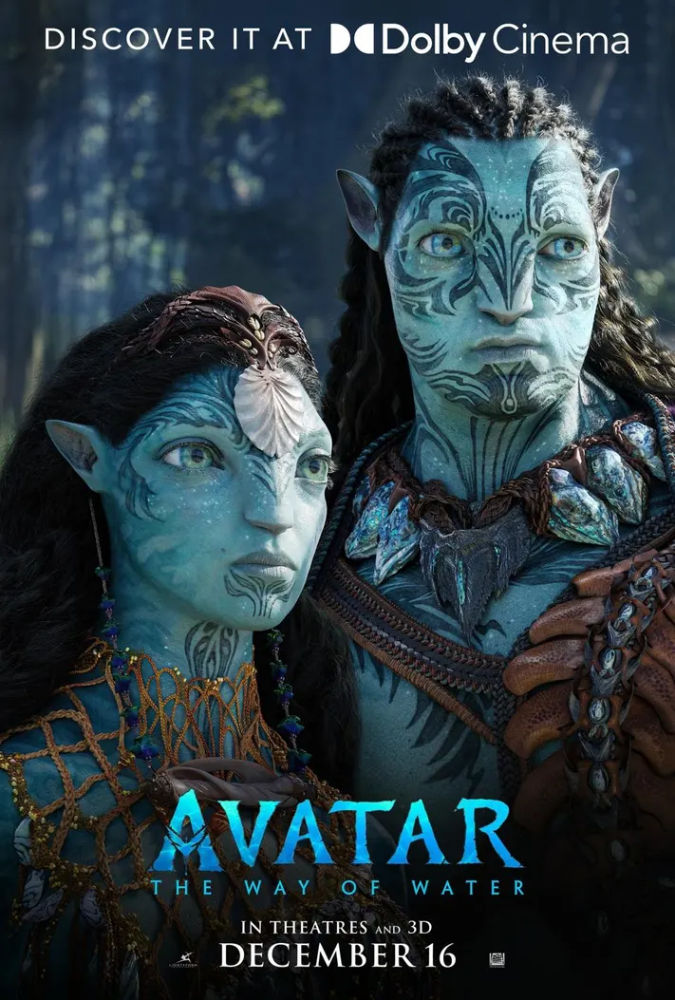

Production Details

The character of Jake Sully serves as a bridge between human and Na'vi cultures, exploring complex themes of identity and belonging. His transformation from a disillusioned outsider to a committed defender of Pandora is both compelling and thought-provoking. The journey highlights the dichotomy between the destructive human intent and the harmonious Na'vi way of life.
Avatar's visual splendor is matched by its ambitious storytelling. The depiction of Pandora, a lush alien world filled with bioluminescent flora and exotic fauna, offers a feast for the eyes and serves as a critical narrative element. The environment is not just a backdrop but a vital participant in the story's drama, reflecting the film's environmental themes of ecological interconnectivity and respect for nature.
Key Plot Points:
- Jake Sully's arrival on Pandora and the Avatar Program.
- The encounter and subsequent bond with the Na'vi people.
- The escalating conflict between human intruders and the Na'vi.
- The epic battle for the survival of Pandora.
- Sully's transformation and the resolution of the conflict.
Main Actors and Director:
- Main Actors: Sam Worthington,Zoe Saldana
- Director: james Cameron
- Produced by: 20th Century Studios
- Company LightStorm Entertainment
Rankings and Notable Aspects:
- Visual effects and innovative use of 3D technology.
- Impact on popular culture and the science fiction genre.
- Development of a unique language and culture for the Na'vi.